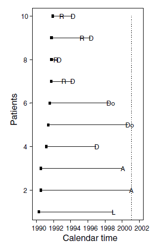
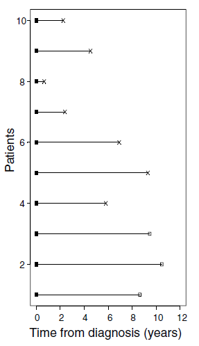

Survival Analysis
BMEG 5103
Ariel Mundo
University of Arkansas
Introduction
(from Wikipedia)
“Survival analysis is a branch of Statistics for analyzing the expected duration of time until one event occurs.
What proportion of the population will survive past a certain time?
Of those that survive, at what rate will they die? ”
Other Names
Reliability analysis
Time-to-event analysis
Biomedical Applications
Cancer studies: time to an event of interest (survival time)
Time from complete remission to relapse or progression
Or time from diagnosis to death
Time to heart attack
Clark, et al. Survival Analysis Part I: Basic Concepts and first analyses. 2003
Challenges
Only some individuals have experienced the event
Survival times will be unknown for a subset of the sample
Survival times are not normally distributed
This leads to an important concept: Censoring
Censoring
“Censoring means that the total survival time for that subject cannot be accurately determined”
Rich, et al. A practical guide to understanding Kaplan-Meier Curves. 2010
Censoring
Causes
- Subject drops out
- Lost to follow-up
- Data is not available
- The study ends before (i.e., subject survived at least until the end of the study, but we don’t know what happened after)
Rich, et al. A practical guide to understanding Kaplan-Meier Curves. 2010
Censoring
Challenges
Censored survival times underestimate the true time to event
Subjects 1,3,4,5 and 8 were censored before 10 years

https://www.emilyzabor.com/tutorials/survival_analysis_in_r_tutorial.html
Another Example
From Clark et al. A prognostic model for ovarian cancer. BJC. 2001
- Data from an ovarian cancer study
- Patients diagnosed with primary epithelial ovarian carcinoma
- Between January 1990 and December 1999
- Follow-up data available until the end of 2000
- By that time, 75.9% had died
Another Example

R: Relapse
D: Death from ovarian cancer
Do: Death from another cause
A: Attended last clinic visit (were alive!)
L: Loss to follow-up
X: Death
Dashed vertical line is the date of the last follow-up
Clark, et al. Survival Analysis Part I: Basic Concepts and first analyses. 2003
Another Example
- 4 patients had a non-fatal relapse (R)
- 1 lost at follow-up
- 7 patients died (5 from ovarian cancer)
- The event of interest here is all-cause mortality (also called overall survival)
Another Example

- The data now is plotted using “survival time”
- Nonfatal relapses are ignored
- Those who have not died are censored
- Q: What would change if we were interested in deaths from ovarian cancer only?
Clark, et al. Survival Analysis Part I: Basic Concepts and first analyses. 2003
Another Example
Q: What would change if we were interested in deaths from ovarian cancer only?
A: Patients 5 and 6 would need to be censored as well
Approach
- For survival data, we usually estimate the Survival Probability (aka Survivor Function)
- Survival \(S(t)\):
Probability that an individual survives from the time origin to a specific future time \(t\)
- Survival \(S(t)\):
- An additional probability could be also estimated the hazard probability (\(h(t)\))
Kaplan-Meier Survival Estimate
- Suppose that \(k\) patients have events at distinct times
\[t_1<t_2<t_3<t_4<...<t_k\] - We assume these events are independent:
We can calculate the cumulative survival probability by multiplying the probabilities of surviving from one interval to the next.
Kaplan-Meier Survival Estimate
\[S(t_j)=S(t_{j-1}) \left( 1-\frac{d_j}{n_j} \right),\]
where:
\(S(t_j)\): the probability of being alive at time \(t_j\).
\(S(t_{j-1})\): probability of being alive at \(t_{j-1}\)
\(n_j\): number of patients alive just before \(t_j\)
\(d_j\): number of events at \(t_j\)
The Hazard probability
The relationship between \(S(t)\) and \(h(t)\) is defined by:
\[h(t)=-\frac{\text{d}}{\text{d}t}[\log S(t)]\]
- If \(S(t)\) is known then \(h(t)\) is automatically known (and viceversa).